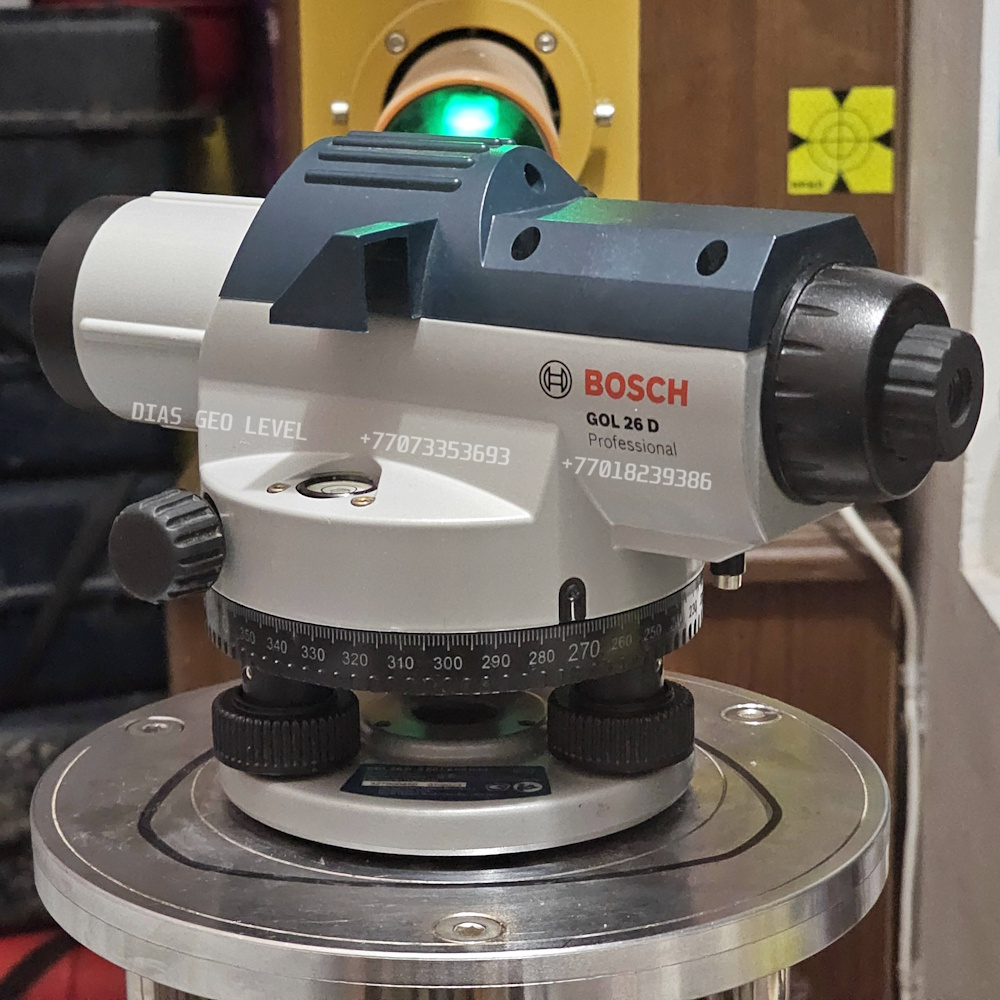

DIAS GEO LEVEL

Trimble

Leica

Bosch
Поверка нивелиров • Калибровка нивелиров • Юстировка нивелиров • Настройка нивелиров • Ремонт нивелиров в Астане
Сертификат о метрологической поверке нивелира на 1 год
📞 Позвонить WhatsApp 📍 2ГИСПочему выбирают нас
- Гарантия на ремонт
- Бесплатная первичная диагностика нивелира.
- В наличии запасные части на нивелиры
- Работаем с утра до вечера, без выходных
Обслуживаем нивелиры всех известных производителей:
Leica NA320 • Leica NA324 • Leica NA332 • Leica NA520 • Leica NA524 • Leica NA532 • Leica NA720 • Leica NA724 • Leica NA728 • Leica NA730 • Leica NA730 Plus • Topcon • Trimble • Sokkia • Nikon • Bosch • CONDTROL • SETL • CROWN • Spectra Precision • SOUTH • Геокурс • УОМЗ • RGK • Зубр и другие.